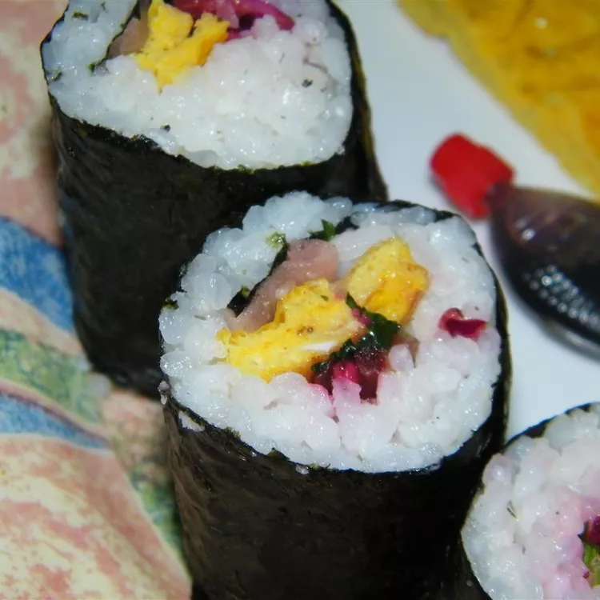

Kimbop (Korean Sushi)

Description
Similar to a sushi roll, but with different ingredients catering to Korean tastes!
Ingredients
- 1 cup uncooked glutinous white rice (sushi rice)
- 1 ½ cups water
- 1 tablespoon sesame oil
- salt to taste
- 2 large eggs, beaten
- 4 sheets sushi nori (dry seaweed)
- 1 cucumber, cut into thin strips
- 1 carrot, cut into thin strips
- 4 slices American processed cheese, cut into thin strips
- 4 slices cooked ham, cut into thin strips
- 2 teaspoons sesame oil
Steps
- Rinse rice in a strainer or colander until water runs clear. Combine rice with 1 1/2 cups water in a saucepan. Bring to a boil, then reduce heat to low; cover and simmer until rice is tender, 12 to 14 minutes. Spread cooked rice onto a baking sheet to cool. Season with 1 tablespoon sesame oil and salt.
- While rice is simmering, pour beaten eggs into a skillet over medium-high heat and allow to cook without stirring or turning to get a flat layer of cooked egg. When egg is completely cooked, remove from the skillet and set aside on a cutting board to cool.
- Separate nori sheets onto a flat surface and divide cooled rice between them, leaving only a 1/2-inch strip seaweed visible at the top of each sheet. Arrange strips of egg, cucumber, carrot, cheese, and ham in thin layers over rice.
- Beginning with the bottom of each sheet of nori, use a bamboo sushi mat to firmly roll each piece into a cylindrical shape. Brush each roll with 1/2 teaspoon sesame oil and cut into 6 equal pieces.